Mangeshkar was born on 28 September 1929[18]: 67 in Indore (in the present-day Indore district of Madhya Pradesh), then the capital of the princely state of Indore which was part of the Central India Agency in British India.Her father, Deenanath Mangeshkar was a Marathi and Konkani classical singer and theatre actor. Deenanath's father was Ganesh Bhatt Navathe Hardikar (Abhisheki), a Karhade Brahmin[19] who served as a priest at the famous Mangeshi Temple in Goa.[18] Deenanath's mother Yesubai Rane was his father's mistress[20] belonging to the Devadasi community of Goa,[21][19][22] a matrilineal community of temple artists now known as Gomantak Maratha Samaj.[23] As a Devadasi, Yesubai was a reputed musician. Deenanath's father's surname was Hardikar.[19]: 47–48 Deenanath had taken the surname Mangeshkar, based on the name of his ancestral village, Mangeshi in Goa.[23][21]Her mother, Shevanti (later renamed Shudhamati), was a Gujarati woman[24] from Thalner, Bombay Presidency (now in northwest Maharashtra). Shevanti was Deenanath's second wife; his first wife Narmada, who had died before his marriage to Shevanti, was Shevanti's older sister.[25] Her maternal grandfather, Seth Haridas Ramdas Lad, was from Gujarat, a prosperous businessman and landlord of Thalner. She learned Gujarati folk songs such as garbas of Pavagadh from her maternal grandmother.[26] Lata was named "Hema" at her birth. Her parents later renamed her Lata after a female character, Latika, in one of her father's plays, भाव बंधन.[27] Lata recorded songs in over thirty-six Indian languages and a few foreign languages, though primarily in Marathi, Hindi, and Bengali.[11] Her foreign languages included English, Indonesian, Russian, Dutch, Nepali, and Swahili.[12] She received several accolades and honors throughout her career. In 1989, the Dadasaheb Phalke Award was bestowed on her by the Government of India.[13] In 2001, in recognition of her contributions to the nation, she was awarded the Bharat Ratna, India's highest civilian honour; she is only the second female singer, after M. S. Subbulakshmi, to receive this honour.[14] France conferred on her its highest civilian award, Officer of the National Order of the Legion of Honour, in 2007.[15] She was the recipient of three National Film Awards, 15 Bengal Film Journalists' Association Awards, four Filmfare Best Female Playback Awards, two Filmfare Special Awards, the Filmfare Lifetime Achievement Award and many more. In 1974, she was one of the first Indian playback singers to perform at the Royal Albert Hall in London, England. Her last recorded song was "Saugandh Mujhe Is Mitti ki" released on 30 March 2019 as a tribute to the Indian Army and the Nation.[16] At one point, she appeared in the Guinness World Records, which listed her as the most recorded artist in history between 1948 and 1987.[17] Mangeshkar was born on 28 September 1929[18]: 67 in Indore (in the present-day Indore district of Madhya Pradesh), then the capital of the princely state of Indore which was part of the Central India Agency in British India. Her father, Deenanath Mangeshkar was a Marathi and Konkani classical singer and theatre actor. Deenanath's father was Ganesh Bhatt Navathe Hardikar (Abhisheki), a Karhade Brahmin[19] who served as a priest at the famous Mangeshi Temple in Goa.[18] Deenanath's mother Yesubai Rane was his father's mistress[20] belonging to the Devadasi community of Goa,[21][19][22] a matrilineal community of temple artists now known as Gomantak Maratha Samaj.[23] As a Devadasi, Yesubai was a reputed musician. Deenanath's father's surname was Hardikar.[19]: 47–48 Deenanath had taken the surname Mangeshkar, based on the name of his ancestral village, Mangeshi in Goa.[23][21]
 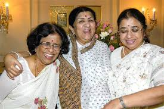
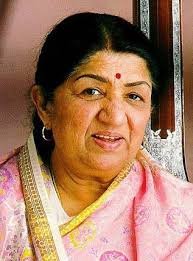
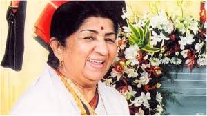
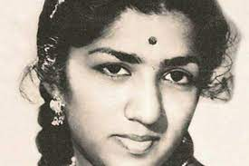
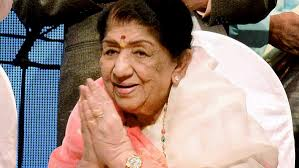
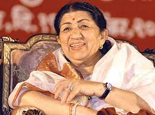
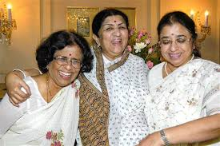
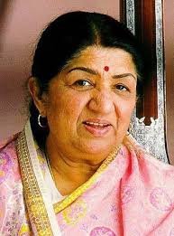
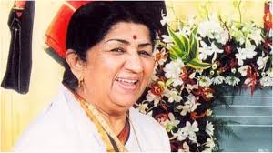
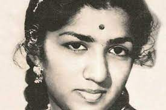
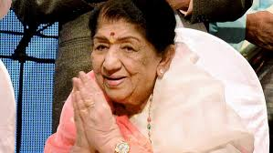
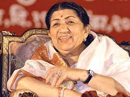